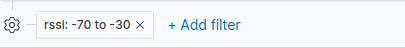

Create a RSSI filter in Kibana to refine occupancy analytics
Our step-by-step guide to create a RSSI filter in Kibana to apply a proximity-based occupancy threshold.

The TL;DR (Too Long; Didn't Read)
Learn how we at reelyActive apply a RSSI filter to eliminate data outside a given proximity threshold.
- What will this accomplish?
- Application of a RSSI filter will retain only radio decodings within a given proximity. The RSSI threshold can be defined according to the size of the zones or rooms targeted.
- Is there an easier way?
- Manual proximity counts using pen and paper?
- So why would I read this?
- To learn both how and why to apply RSSI filtering in data analysis and visualisation.
Prerequisites
reelyActive open source software with Elasticsearch and Kibana.
-

[Optional] Prepare a reelyActive laptop from scratch
Includes our step-by-step guide to install Elasticsearch and Kibana on a Linux computer/server. -

[Optional] Set up a hosted Elasticsearch Service
Includes our step-by-step guide to setup Elastic's convenient hosted cloud service.
In order for there to be data to visualise, the reelyActive software must also have collected and written raddec data to Elasticsearch.
Creating a RSSI filter from the dashboard tab Step 1 of 2
Creating a RSSI Filter from the dashboard tab will adjust all the visualizations recorded in the dashboard.
- What's RSSI ?
- RSSI stands for “Received Signal Strength Indicator” and gives us a clue to the distance.
- Why's Kibana ?
- Kibana makes it easy to visualize data from an Elasticsearch database, where the source data is stored.
RSSI is used to approximate distance between the device and the sensor. At maximum Broadcasting Power the RSSI ranges from -35 (a few inches) to -100 (40-50 m distance). By applying RSSI filter you can display only tags within a certain distance. The RSSI threshold can be defined according to the size of the rooms.
Open Kibana and then:
- Select the Dashboard tab from the left menu bar
- Click the Add Filter button, below the search bar
- Select the RSSI filter
- Select is between from Operators pull-down
- Set the distance range, according to the needs, for example From -75 To -30
- Enter the label RSSI Filter and click the Save button
The RSSI filter should appear below the search bar as follow :
This filter will have an impact on all the visualizations of the dashboard.
Creating a RSSI filter for a specific vizualisation Step 2 of 2
Creating a RSSI filter for a specific vizualisation without impacting the rest of the vizualisations.
- What's for?
- Depending on the needs, it might be interesting to set a distance range for a specific visualization like a specific area.
In the Visualization window
- From the Buckets or the Group by pull down select Filters
- Enter receiverId.keyword: and type the ID of the sensor
- From the Label input type the name of the location where the sensor is set up
- Complete the filter input and separate the expressions by entering and
- Enter rssi and type the rssi threshold as the example below:
Where to next?
Create other visualizations, or continue exploring our open architecture and all its applications.
-

reelyActive Kibana integration overview
Find links to all our Kibana tutorials. -

diyActive Home
The home for reelyActive developers.